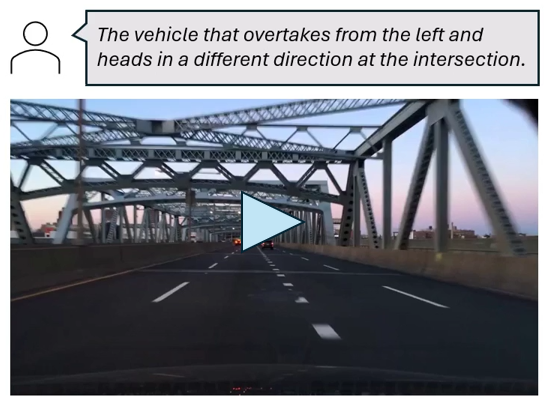
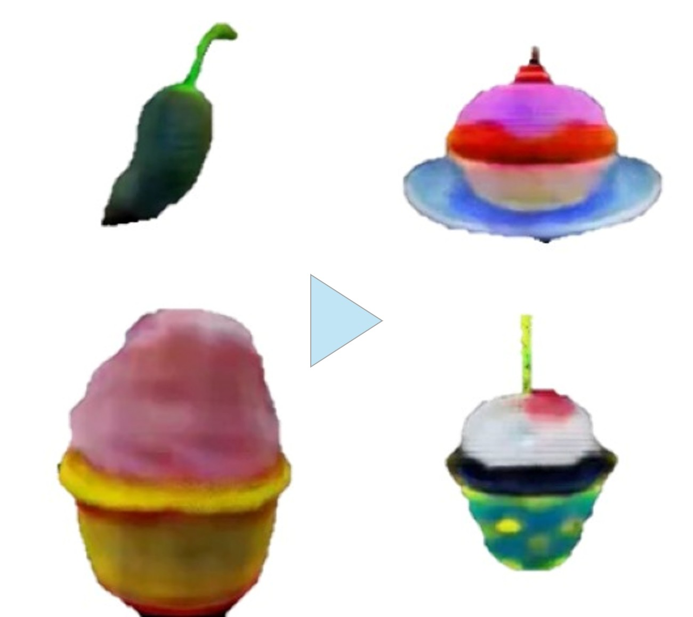
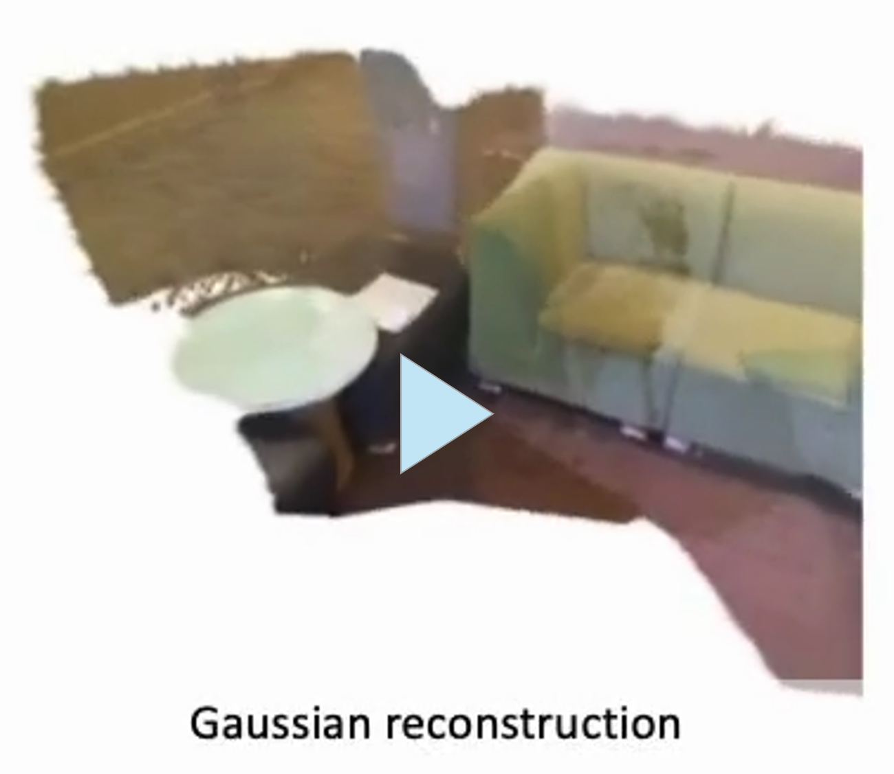
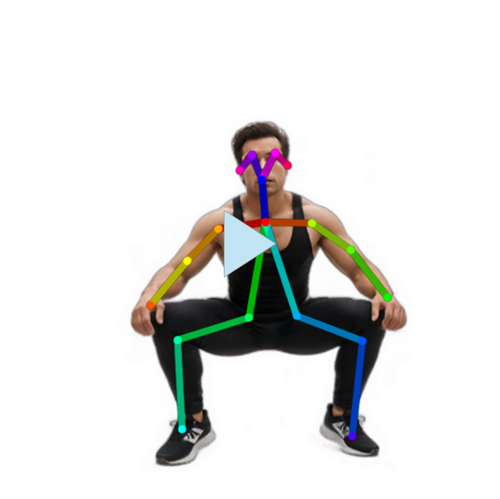
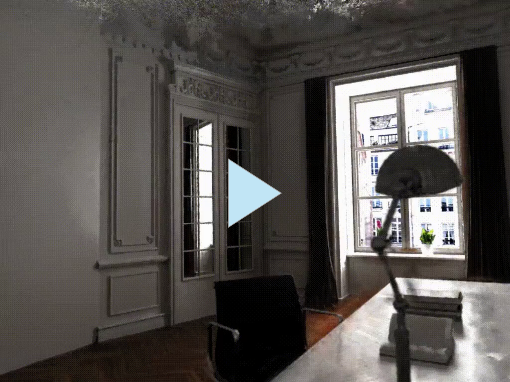

|
Alt name: Daniel Kao, Xuhong Kao
Google ScholarGithub DBLP X (Twitter) |
I am a PhD student in Computer Science at National University of Singapore (NUS). My research interests sit at the intersection of deep learning and computer vision, with a specific focus on diffusion models, multimodal large language models, and 3D reconstruction. I am particularly driven by the goal of leveraging the potential of pre-trained models in vision-language challenges through modular design and efficient adaptation techniques.
Previously, I received the M.Phil. in Computer Science and Engineering from the Hong Kong University of Science and Technology (HKUST) under the supervision of Prof. Chi-Keung Tang, collaborating closely with Prof. Yu-Wing Tai from Dartmouth College. I also served as a research intern in the Media Computing Group at Microsoft Research Asia, working with Dr. Xiao Li and Dr. Jinglu Wang. Prior to my graduate studies, I earned the Bachelor of Science degree from HKUST, double-majoring in Data Science and Technology and in Computer Science. I completed my undergraduate thesis in Prof. Shueng-Han Gary Chan's lab, in cooperation with Dr. Jierun Chen.
| Jan. 2026 | CoT-RVS is accepted to ICLR 2026. |
| Jan. 2026 | I joined the PhD program at NUS. |
| Nov. 2025 | A new preprint is released: CoT-Seg. |
| Jun. 2025 | StreamGS is accepted to ICCV 2025. |
| Jan. 2025 | I was honored to receive the Stars of Tomorrow Award from Microsoft Research Asia. |
- About my name: I go by the name Daniel in daily life. My Chinese name, Shiu-hong (pronounced similarly to "she hong" with an "o" sound), is typically used only in official documents and my publications. In mainland China, I am sometimes referred to as Xuhong, which is based on a different homophonic transliteration system.
Publications

|
Shiu-hong Kao, Yu-Wing Tai, Chi-Keung Tang International Conference on Learning Representations (ICLR), 2026 [arXiv] [Project page] We propose CoT-RVS to extract the temporal-semantic correlation in videos with chain of thoughts and achieve the state-of-the-art performance for reasoning video segmentation. |
|
|
Shiu-hong Kao*, Chak-Ho Huang*, Huaiqian Liu*, Yu-Wing Tai, Chi-Keung Tang Arxiv preprint 2026. [arXiv] [Project page] *Equal contribution. We propose CoT-Seg, a modular reasoning segmentation framework that significantly improves the quality of segmentation masks with chain-of-thought reasoning and self-correction loop. |
|
|
Shiu-hong Kao, Yu-Wing Tai, Chi-Keung Tang Arxiv preprint 2025. [arXiv] [Project page] We propose ThinkFirst, a novel Chain-of-Thought (CoT) reasoning segmentation framework that generates an accurate object mask given a text prompt. ThinkFirst can handle difficult scenarios such as implicit queries, camouflaged objects, out-of-domain objects with easy control. |

|
Shiu-hong Kao, Xiao Li, Jinglu Wang, Yang Li, Chi-Keung Tang, Yu-Wing Tai, Yan Lu Arxiv preprint 2025. [arXiv] [Demo] We introduce UVRM, a novel 3D reconstruction model capable of being trained and evaluated on 360-degree monocular videos without requiring any information about the pose. |

|
Yang Li, Jinglu Wang, Lei Chu, Xiao Li, Shiu-hong Kao, Yingcong Chen, Yan Lu International Conference on Computer Vision (ICCV), 2025 [arXiv] We propose StreamGS, an online generalizable 3DGS reconstruction method for unposed image streams, which progressively transform image streams to 3D Gaussian streams by predicting and aggregating per-frame Gaussians. |
|
|
Chia-Hong Hsu, Shiu-hong Kao, Randall Balestriero Arxiv preprint 2025. [arXiv] [Project page] We propose invertible Guided Consistency Training (iGCT), a data-driven training framework for guided consistency model, contributing to fast and guided image generation and editing without requiring the training and distillation of any diffusion models. |

|
Shiu-hong Kao, Xinhang Liu, Yu-Wing Tai, Chi-Keung Tang Arxiv preprint 2024. [arXiv] We propose InceptionHuman, a NeRF-based generative framework incorporating state-of-the-art diffusion models, which receives any types and any sizes of prompts, (e.g. text, pose, style) to generate realistic 3D human. |

|
Xinhang Liu, Jiaben Chen, Shiu-hong Kao, Yu-Wing Tai, Chi-Keung Tang European Conference on Computer Vision (ECCV), 2024 [arXiv] [Project page] We introduce Deceptive-NeRF/3DGS, a new method for enhancing the quality of reconstructed NeRF/3DGS models using synthetically generated pseudo-observations, capable of handling sparse input and removing floater artifacts. |
|
|
Shiu-hong Kao*, Jierun Chen*, S.-H. Gary Chan Arxiv preprint 2023. [arXiv] [Code] *Equal contribution. We reveal the issue of Inter-block Optimization Entanglement (IBOE) in end-to-end KD training and further propose StableKD to stablilize optimization. Extensive experiments show StableKD achieve high accuracy, fast convergence, and high data efficiency. |
 |
Jierun Chen, Shiu-hong Kao, Hao He, Weipeng Zhuo, Song Wen, Chul-Ho Lee, S.-H. Gary Chan IEEE/CVF Conference on Computer Vision and Pattern Recognition (CVPR), 2023 [Paper] [Code] We propose a simple yet fast and effective partial convolution (PConv), as well as a latency-efficient family of network architectures called FasterNet. |
Industrial Experience
 |
Media Computing Group, Microsoft Research Asia Jun 2024 - Dec 2024 Conduct cutting-edge research and publish state-of-the-art papers in the 3D computer vision domain, contributing significantly to advancements in the research community. |
|
Software Engineer Intern Hong Kong Applied Science and Technology Research Institute (ASTRI) Jun 2021 - Aug 2021 Design and develop algorithms to solve problems; researching the latest technologies; tasks including image processing, OCR, data parsing, deep learning, etc. [report] |
Academic Services
- Reviewer: ICLR 2025
- Sub-reviewer: BMVC 2023, ICLR 2024, CVPR 2024
Teaching Assistant
- COMP4471/ELEC4240 Deep Learning in Computer Vision (Spring 2025)
- COMP4411 Computer Graphics (Spring 2024)
- COMP2611 Computer Organization (Fall 2022, Spring 2023)
Awards & Honors
- NUS Research Scholarship, (2026)
- Stars of Tomorrow Internship Award of Excellence, Microsoft Research (2025)
- Postgraduate Scholarship, HKUST (2023-25)
- First Class Honors, HKUST (2023)
- University Scholarship for Continuing Undergraduate Students, HKUST (2022, 2023)
- Dean's List, HKUST (Fall 2019, Fall 2020, Spring 2021, Fall 2022, Spring 2023)
- Dean's List (High Honors), Northwestern University (Spring 2022)
- S.S. Chern Class Scholarship, HKUST (2021)
- Silver Medal, Yau's Award, National Taiwan University (2018)